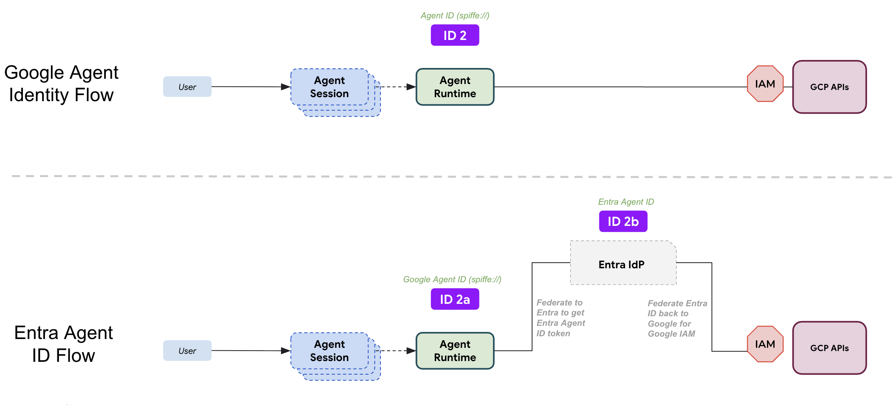

Enterprise AI agents require robust identity, authentication, and governance. When agents perform autonomous actions across multi-cloud environments—such as accessing enterprise documents in Google Cloud Storage while being governed by enterprise policies in Microsoft Entra—a unified, secret-free identity architecture is critical.
This codelab guides you through integrating Microsoft Entra Agent ID with Agent Platform (using the Agent Development Kit - ADK and Agent Runtime).
In this codelab, you will build and deploy a pure Python ADK agent that:
The diagram below illustrates the two primary identity execution paths for AI agents running on Google Cloud:

spiffe://...) and directly requests authorization from Google Cloud IAM. This is the standard, most common flow for native GCP workloads.spiffe://agents.global.org-<org-id>.system.id.goog/
resources/aiplatform/projects/<project-num>/
locations/<region>/reasoningEngines/<id>
/token endpoint with scope=api://AzureADTokenExchange/.default and fmi_path=. Entra validates the Federated Identity Credential (FIC) trust and returns an exchange token T1.https://login.microsoftonline.com/<tenant_id>/v2.0
principal://iam.googleapis.com/projects/<project-num>/
locations/global/workloadIdentityPools/entra-agent-pool/
subject/<entra-agent-object-id>
my-agent-entra-project).gcloud CLI installed and authenticated: gcloud auth login
gcloud auth application-default login
uv fast Python package manager: curl -LsSf https://astral.sh/uv/install.sh | sh
agents-cli: uv tool install google-agents-cli
In this step, configure Microsoft Entra ID in the Microsoft Entra Admin Center to instantiate the parent Blueprint and the child Agent Identity.
Gemini-Entra-Agent-Blueprint.a46680b6-9643-4c22-af5e-e9e7303a6471).Gemini-Entra-Agent-Blueprint as the parent blueprint.Gemini-Entra-Agent-ID.e5a1e0b3-ed9c-4fa4-84cb-050128d063a8).We provide an automated, one-click deployment solution that handles all Google Cloud components with a single command.
The deployment script automatically:
aiplatform, iam, sts, storage).roles/storage.objectViewer) to your Microsoft Entra Agent Identity Object ID..env and agents-cli-manifest.yaml).Execute the included automated deployment script:
chmod +x scripts/deploy_all.sh
./scripts/deploy_all.sh
The script will prompt for your IDs if not already set in .env:
Once deployment completes, note the Reasoning Engine ID (or Reasoning Engine URI) displayed at the end of the script output.
Now that the agent is deployed on Google Cloud Agent Runtime and you have your Reasoning Engine ID, establish the cryptographic trust link between Google Agent Runtime and Microsoft Entra.
Run the following gcloud commands in your terminal to retrieve your Organization ID, Project Number, and Reasoning Engine ID:
# Get your Google Cloud Organization ID
gcloud projects describe $(gcloud config get-value project) --format="value(parent.id)"
# Get your Google Cloud Project Number
gcloud projects describe $(gcloud config get-value project) --format="value(projectNumber)"
# Get your Reasoning Engine ID
gcloud ai reasoning-engines list \
--region=us-central1 \
--project=$(gcloud config get-value project) \
--format="value(name)" \
--limit=1 | awk -F'/' '{print $NF}'
Gemini-Entra-Agent-Blueprint.https://sts.googleapis.com/v1/organizations/<your-google-org-id>/locations/global/workloadIdentityPools/agents.global.org-<your-google-org-id>.system.id.goog
spiffe://agents.global.org-<your-google-org-id>.system.id.goog/resources/aiplatform/projects/<your-project-number>/locations/us-central1/reasoningEngines/<your-reasoning-engine-id>
api://AzureADTokenExchangeGoogleAgentRuntimeTrustNote: For your review only, this is automatically deployed by the script.
The following section explains the underlying Google Cloud WIF configuration provisioned during the automated deployment.
A dedicated pool is created to hold federated identities:
gcloud iam workload-identity-pools create entra-agent-pool \
--location=global \
--display-name="Entra Agent ID Pool" \
--description="Workload Identity Pool for Microsoft Entra Agent ID federation" \
--project=$GCP_PROJECT_ID
The provider trusts Microsoft Entra ID's v2.0 OIDC issuer endpoint:
AUDIENCES="fb60f99c-7a34-4190-8149-302f77469936"
AUDIENCES+=",api://AzureADTokenExchange"
AUDIENCES+=",https://graph.microsoft.com"
AUDIENCES+=",00000003-0000-0000-c000-000000000000"
AUDIENCES+=",${ENTRA_CLIENT_ID}"
AUDIENCES+=",api://${ENTRA_CLIENT_ID}"
MAPPINGS="google.subject=assertion.sub"
MAPPINGS+=",attribute.tid=assertion.tid"
MAPPINGS+=",attribute.oid=assertion.oid"
MAPPINGS+=",attribute.appid=assertion.appid"
MAPPINGS+=",attribute.agent_id=assertion.sub"
gcloud iam workload-identity-pools providers create-oidc entra-oidc-provider \
--workload-identity-pool=entra-agent-pool \
--location=global \
--display-name="Microsoft Entra IdP Provider" \
--issuer-uri="https://login.microsoftonline.com/${ENTRA_TENANT_ID}/v2.0" \
--allowed-audiences="${AUDIENCES}" \
--attribute-mapping="${MAPPINGS}" \
--attribute-condition="assertion.tid == '${ENTRA_TENANT_ID}'" \
--project=$GCP_PROJECT_ID
Permissions are bound strictly to the Entra Agent Principal:
POOL_PATH="projects/${GCP_PROJECT_NUMBER}/locations/global/workloadIdentityPools/entra-agent-pool"
ENTRA_PRINCIPAL="principal://iam.googleapis.com/${POOL_PATH}/subject/${ENTRA_AGENT_OBJECT_ID}"
# Cloud Storage Access
gcloud projects add-iam-policy-binding $GCP_PROJECT_ID \
--member="${ENTRA_PRINCIPAL}" \
--role="roles/storage.objectViewer"
Note: For your review only, this is automatically deployed by the script.
The ADK agent implementation includes token exchange modules and custom Google credentials providers.
agent/auth/entra_exchange.py)Implements the 2-step Autonomous App OAuth Flow (RFC 7523) specified in Microsoft Entra documentation:
import logging
from typing import Dict, Any, Optional
import requests
logger = logging.getLogger(__name__)
def exchange_google_for_entra_token(
google_assertion: str,
tenant_id: str,
client_id: str,
agent_identity_id: Optional[str] = None,
scope: Optional[str] = None,
) -> Dict[str, Any]:
"""Exchanges Google SPIFFE assertion for an Entra Agent ID token via Autonomous App Flow."""
token_url = f"https://login.microsoftonline.com/{tenant_id}/oauth2/v2.0/token"
headers = {
"Content-Type": "application/x-www-form-urlencoded",
"Accept": "application/json",
}
# Step 1: Blueprint requests T1 exchange token with fmi_path
step1_payload = {
"grant_type": "client_credentials",
"client_id": client_id,
"scope": "api://AzureADTokenExchange/.default",
"client_assertion_type": "urn:ietf:params:oauth:client-assertion-type:jwt-bearer",
"client_assertion": google_assertion,
}
if agent_identity_id:
step1_payload["fmi_path"] = agent_identity_id
res1 = requests.post(token_url, data=step1_payload, headers=headers, timeout=10)
res1.raise_for_status()
t1_token = res1.json()["access_token"]
if not agent_identity_id:
return res1.json()
# Step 2: Agent Identity requests resource token using T1
effective_scope = scope or "api://AzureADTokenExchange/.default"
step2_payload = {
"grant_type": "client_credentials",
"client_id": agent_identity_id,
"scope": effective_scope,
"client_assertion_type": "urn:ietf:params:oauth:client-assertion-type:jwt-bearer",
"client_assertion": t1_token,
}
res2 = requests.post(token_url, data=step2_payload, headers=headers, timeout=10)
res2.raise_for_status()
return res2.json()
agent/auth/google_sts.py)Exchanges the Entra token back with Google STS:
import requests
def exchange_entra_for_google_sts_token(
entra_token: str,
project_number: str,
pool_id: str,
provider_id: str,
) -> dict:
"""Exchanges an Entra ID token for a Google STS access token."""
sts_url = "https://sts.googleapis.com/v1/token"
audience = (
f"//iam.googleapis.com/projects/{project_number}/"
f"locations/global/workloadIdentityPools/{pool_id}/"
f"providers/{provider_id}"
)
payload = {
"audience": audience,
"grant_type": "urn:ietf:params:oauth:grant-type:token-exchange",
"requested_token_type": "urn:ietf:params:oauth:token-type:access_token",
"scope": "https://www.googleapis.com/auth/cloud-platform",
"subject_token_type": "urn:ietf:params:oauth:token-type:jwt",
"subject_token": entra_token,
}
response = requests.post(sts_url, data=payload, timeout=10)
response.raise_for_status()
return response.json()
agent/auth/credentials.py)Wraps the federation workflow in a standard google.auth.credentials.Credentials object:
import google.auth.credentials
from google.auth.transport import Request
class EntraFederatedCredentials(google.auth.credentials.Credentials):
def refresh(self, request: Request) -> None:
# 1. Acquire Google SPIFFE assertion
bootstrap_token = get_google_bootstrap_token()
# 2. Federate to Microsoft Entra
entra_res = exchange_google_for_entra_token(
google_assertion=bootstrap_token,
tenant_id=settings.entra_tenant_id,
client_id=settings.entra_client_id,
agent_identity_id=settings.entra_agent_object_id,
scope=settings.entra_scope,
)
# 3. Exchange Entra token with Google STS
sts_res = exchange_entra_for_google_sts_token(
entra_token=entra_res["access_token"],
project_number=settings.gcp_project_number,
pool_id=settings.wif_pool_id,
provider_id=settings.wif_provider_id,
)
self.token = sts_res["access_token"]
Now invoke the live deployed agent to verify the entire multi-cloud identity flow.
You can obtain the REASONING_ENGINE_URL in either of two ways:
./scripts/deploy_all.sh or agents-cli deploy, the terminal prints the Reasoning Engine URI.gcloud:REASONING_ENGINE_ID=$(gcloud ai reasoning-engines list \
--region=us-central1 \
--project=$GCP_PROJECT_ID \
--format="value(name)" \
--limit=1 | awk -F'/' '{print $NF}')
GCP_PROJECT_NUMBER=$(gcloud projects describe $GCP_PROJECT_ID \
--format="value(projectNumber)")
REASONING_ENGINE_URL="https://us-central1-aiplatform.googleapis.com/v1/projects/${GCP_PROJECT_NUMBER}/locations/us-central1/reasoningEngines/${REASONING_ENGINE_ID}"
echo "Target Endpoint: $REASONING_ENGINE_URL"
agents-cli runagents-cli run \
--url "${REASONING_ENGINE_URL}" \
--mode adk \
"Inspect your active identity, list documents from Cloud Storage, and read 'sales_audit_2026.txt'."
[user]: Inspect your active identity, list documents from Cloud Storage, and read 'sales_audit_2026.txt'.
[agent_platform_entra_id]: Here are the results of your requests:
**Agent Identity Inspection:**
* Status: Verified
* Active GCP Principal: principal://iam.googleapis.com/projects/.../workloadIdentityPools/entra-agent-pool/subject/e5a1e0b3-ed9c-4fa4-84cb-050128d063a8
* Entra Agent Client ID: a46680b6-9643-4c22-af5e-e9e7303a6471
* Entra Tenant ID: cc2c59dc-7f33-441c-bfac-ec4e73182d0a
**Cloud Storage Documents (GCS):**
* Bucket: my-agent-entra-docs
* Files Listed:
- entra_federation_guide.txt
- sales_audit_2026.txt
**Document Content ('sales_audit_2026.txt'):**
"Sales audit summary for Q1 2026: All transactions verified against Microsoft Entra Agent ID governance."
Congratulations! You have successfully built and deployed a multi-cloud enterprise AI agent governed by Microsoft Entra Agent ID running on Agent Platform.